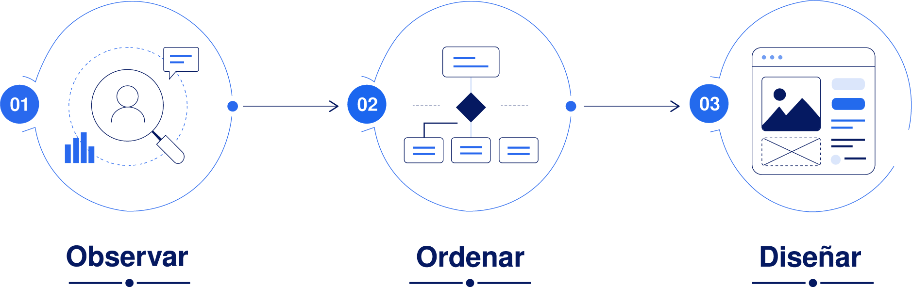

Mi enfoque parte de observar y entender antes de diseñar. Busco identificar necesidades reales, ordenar la información y construir experiencias que sean claras, accesibles y fáciles de recorrer. Me interesa que cada decisión visual y funcional tenga un propósito, conectando la investigación con soluciones simples, coherentes y centradas en las personas.